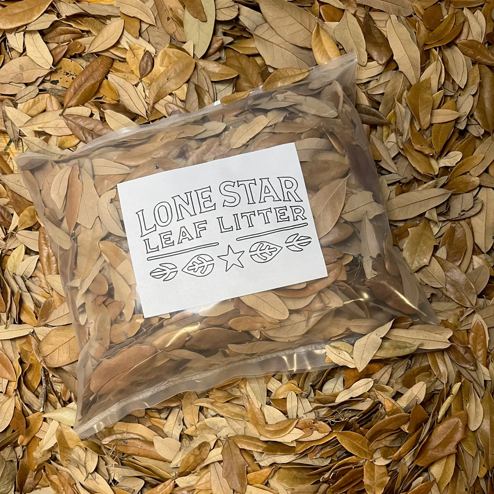
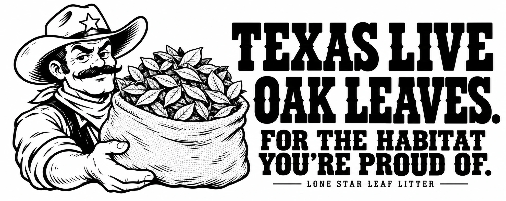
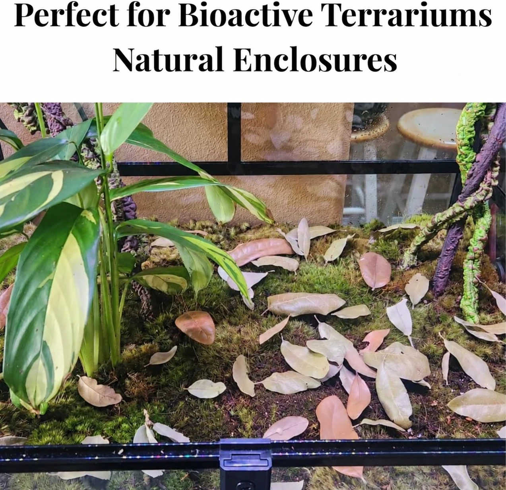

Etsy
From our family shop.
Find Lone Star Leaf Litter in Holly’s BirdieQPlusTwo shop. Each gallon size has its own listing.
Browse our Etsy leaf litter ↗Genuine Texas live oak
Small leaves. Hell of a work ethic.
Our family hand-picks live oak leaves in South Texas, sifts them twice, and winnows out the grit, sticks, and dust before packing each gallon by hand.
It’s maximum effort applied to something otherwise overlooked. Texas live oak leaf litter for isopods and bioactive habitats.
Send me the damn leaves Shop Leaf Litter New to leaf litter? Start here →Buy the 2-gallon bundle at our online shop, or choose Etsy, eBay, or Amazon for other buying options.

Same Texas leaves. Your choice of checkout.
Choose your gallon size below, then head to Etsy, eBay, or Amazon to finish your order. Prices, shipping, offers, and availability can differ between marketplaces.
Etsy
Find Lone Star Leaf Litter in Holly’s BirdieQPlusTwo shop. Each gallon size has its own listing.
Browse our Etsy leaf litter ↗eBay
Our birdieqplustwo-shop listing lets you choose 1, 2, 3, or 4 gallons.
Check current price on eBay
View our eBay listing ↗Amazon
Already shopping on Amazon? Choose your size below and see that listing’s price, reviews, and delivery options.
Browse on Amazon ↗Check the linked marketplace for the latest price and shipping. Any preview price is an item price before shipping and tax.
Pick your supply
Gallons describe leaf quantity, not the size of tank it will fill. Select the right amount for your enclosure floor area and leaf depth.
Dry, hand-picked Texas live oak leaves.
Check current price on Etsy
Dry, hand-picked Texas live oak leaves.
Check current price on Etsy
Dry, hand-picked Texas live oak leaves.
Check current price on Etsy
Dry, hand-picked Texas live oak leaves.
Check current price on Etsy
Product photo shows our leaves and packaging; quantity and package presentation vary by size. On eBay, choose the gallon size in the listing before buying. Check each marketplace for the delivered total and return terms.
Hand-collected in TexasFor the living terrarium

Texas live oak · Naturally fallen leaves · Bioactive habitats
Your cleanup crew has work to do.
The leaves give your friends cover, places to forage, and material for the cleanup crew to work through as they break down. You put down a layer, the isopods move in, and suddenly that quiet corner of your terrarium is a typhoon of excellence with fourteen legs and absolutely no interest in being supervised.
A layer of leaves creates small pockets of cover for your cleanup crew and adds natural texture to the enclosure.
As leaves break down, they provide organic material for a bioactive setup. Match your leaf mix to the species you keep.
The shape and earthy tones of live oak leaves bring the look of a woodland floor into your habitat.

We supply Texas live oak leaves for the little outfit you’ve got running in that terrarium. Places to hide. Leaves to work through. Something besides that one expensive stick you keep rearranging.
Start with your animals’ needs. Keep ventilation, moisture, and access to food and water appropriate for the species in your care.
Read the setup guide →Built for the ride over
We pack these leaves in thick 6-mil bags to help protect them during shipping. Once they arrive, your dairy cows can go through them like a machine gun on peyote. Until then, our job is to keep the leaves as intact as possible.
The leaf litter journal
Field notes, habitat know-how, and reports from the smaller end of the food chain.
Field report / Getting started
Before the crew clocks in, get the floor ready. Our setup guide covers preparing your leaves, adding a layer, and keeping an eye on the habitat.
Read the setup guide →Habitat desk / Isopod care
They work through decaying material. You still handle the husbandry. Get to know the role leaf litter plays in an isopod culture.
Read the isopod guide →Supply report / Leaf selection
If the leaf layer is disappearing, take a look at what your crew is working through. Compare live oak with other leaf types before the next restock.
Compare the leaves →Ranch notes / Ongoing care
Enclosure conditions and appetites vary. Check the leaf layer regularly and replenish it as it breaks down. The setup guide walks through ongoing care.
Keep the ranch running →The people behind the leaves
Lone Star Leaf Litter is our Texas brand for dry live oak leaves, gathered and packed by our family in South Texas. We hand-pick the leaves, sift them twice, and winnow out grit, sticks, and dust before packing by the gallon.
No mystery blend. No fancy story about a leaf having a day job. Just live oak leaves, hands-on sorting, and thick 6-mil packaging for the ride to your habitat.
For product questions, use the contact-seller option on your preferred marketplace. For an existing order, contact us through the marketplace where you bought it so the question stays with the right purchase.
Visit our family’s Etsy shop →Before you order
Choose Etsy, eBay, or Amazon. Each marketplace handles checkout, payment, shipping details, and returns for its orders.
Leaf litter is commonly used in bioactive terrariums, vivariums, and isopod cultures. Choose materials and moisture conditions suited to your species.
Check your enclosure regularly and replenish as leaves break down. The timing depends on moisture, your cleanup crew, and the amount used.
From our neck of the woods
Choose Etsy, eBay, or Amazon for current product details and delivery options.